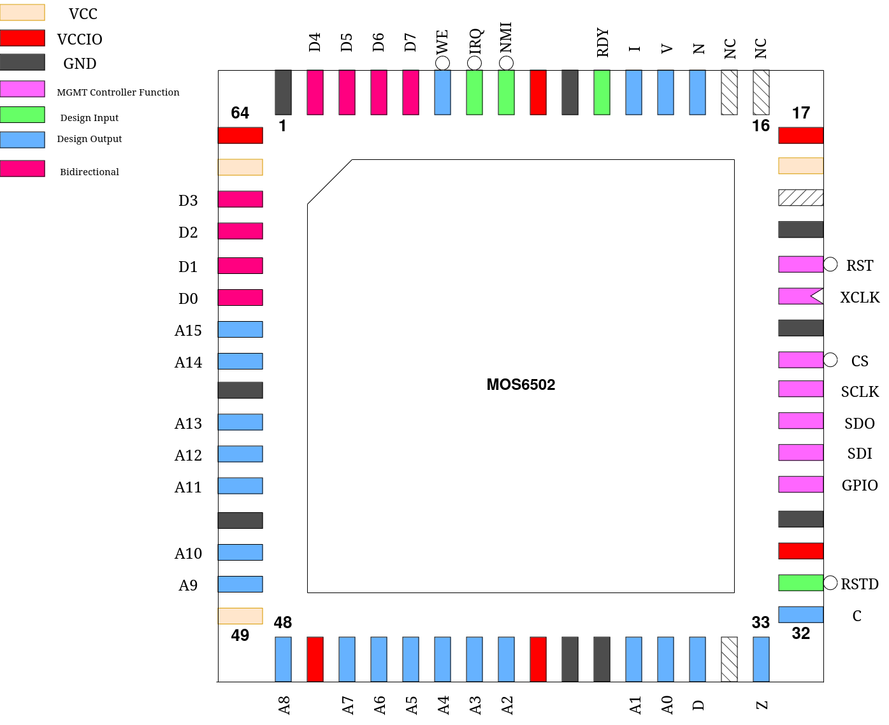

MOS6502
This design is a cycle-accurate implementation of the MOS6502 CPU, though it does not implement all of the original’s control signals. Most of the therefore unused pins instead expose various internal CPU flags for debugging, but can be ignored during normal usage.
Credit for the implementation goes to Arlet Ottens.
Pinout
Pin # |
Name |
Type |
Summary |
|---|---|---|---|
|
RSTD |
I |
Active low design reset |
|
C |
O |
Carry Flag |
|
Z |
O |
Zero Flag |
|
D |
O |
Decimal Mode Enable |
|
A[15:0] |
O |
Address Bus |
|
D[7:0] |
IO |
Bidirectional Data Bus |
|
WE |
O |
Write-enable |
|
IRQ |
I |
Interrupt request |
|
NMI |
I |
Non-maskable interrupt request |
|
RDY |
I |
Ready input, CPU pauses while pin low |
|
I |
O |
Interrupt Enable |
|
V |
O |
Overflow Flag |
|
N |
O |
Negative Flag |
|
NC |
NC |
Do not connect |
|
NC |
NC |
Do not connect |
Custom Settings
This design uses the least significant two bits of the Custom Settings register to modify the behavior of the WEb pin. By default (mprj_settings = 0), the WEb signal behaves as originally, always strobing low for a full clock period.
It may, however, also be set as follows:
1: WEb strobes only during the low period of the clock
2: WEb strobes only during the high period of the clock